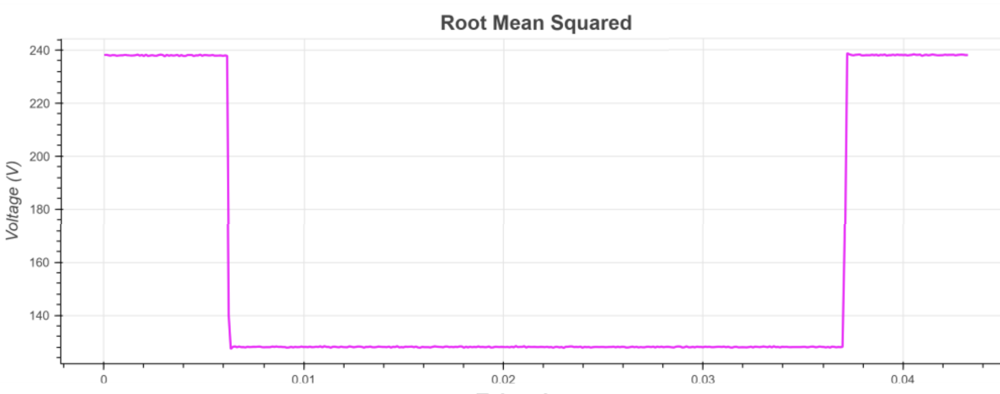

Waveform Project
The Real Time Digital Simulator (RTDS) is a model with 6 different fault locations, with virtual meters at each locationt. These meters can capture waveform data and output it into a COMTRADE format or CSV format. I analyzed both formats putting the voltage and current data into numpy arrays and pandas dataframes respectively. With this raw voltage data, I did various signal transformations. For each signal transformation, I utilized matplotlib and bokeh to visualize the data.

Cycle difference (pictured above): subtracts a signal point value to a signal point one cycle before to highlight changes between cycles. Faults appear as sharp spikes on the graph.
RMS, which computes the square root of the average of the squared values for each cycle. This finds the effective voltage across the data, and drops in voltage indicate abnormal conditions.
I calculated other metrics as well, such as the RMS drop (RMS max - min) and anomaly score, which is calculated by finding the effective energy off the wavelet coefficients calculated from the raw voltage data. I put these values in a dataframe amd summarized the data by location and meter. To better visualize the imformation, I also put it in a power BI sceen that had a graph and summary table metrics for further visualization.
One of the functions, anomaly score, takes in a wavelet coefficient parameter.
Wavelets are comprised of wavelet coefficients, with Wavelet coefficients capture similarity between a signal and the chosen Daubechies wavelet, where more vanishing moments improve frequency resolution while compromising time resolution. For fault detection, these coefficients feed into anomaly detection algorithms, and we observed that wavelets with more vanishing moments generally produced lower anomaly scores.
Through graphing wavelets for multiple levels and different vanishing moments, we found the optimal wavelet type based on the amount of signal distortion